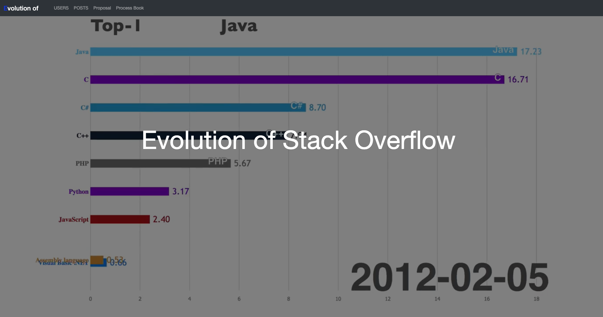
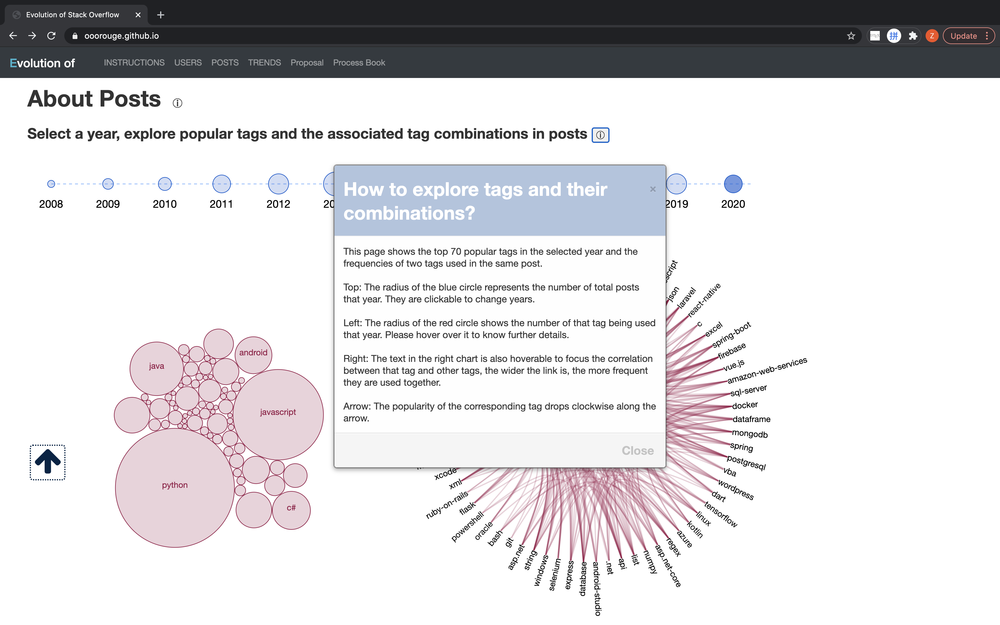

Process Book
Basic Info
Project title: Evolution of Stack Overflow
Team name: Stacked Cats
Members: Flora Sun, Jing Zhang, Yongcheng Long
Emails and IDs:
- yongcheng.long@wustl.edu, 476433
- zjing@wustl.edu, 475536
- zhixin.sun@wustl.edu, 475178
Link to repo: https://github.com/ooorouge/ooorouge.github.io
Link to website: https://ooorouge.github.io
Overview and Motivation
Stack Overflow might be the world's largest tech form that millions of users post their questions and answer others’ questions in one day, perhaps, we use it a lot to dig out solutions for it and might answer some of the questions. Since stack overflow was launched on September 15, 2008, it is quite an incredible accomplishment that it achieved. This is the reason why we’d like to find out the evolution of stack overflow by users and posts in recent six years. In users’ perspective, we are eager to find out in recent six years how many users involved in using stack overflow, are they active or not and who are the most voted problem solvers. In posts’ perspective, we’d like to know what are they related to by tags as well as the combinations of tags users used to categorize their questions.
Related Work
- Stroy telling: How Flash games shaped the video game industry
How candidate diversity impacts color diversity
These two websites show that we can include animation and scrolling down visualization to tell a story vividly.
- Relationships among computer science terms: How to present relationships among classes in a software hierarchy
This visualization provided a template to organize the computer science terms and display relationships.
Questions
- Where are the users in recent years?
- Are they active or not?
- Who are the users with the highest level of reputation?
- What are the most popular tags used to categorize a question?
- How are the combinations of tags used to categorize a question?
- How many posts are made using these tags?
- (Optional question): How many posts are created over time?
Data
Users
Number of new users and inactive users
src: Query Stack Overflow
Scraping method: Using SQL and download selections in csv format.
Cleanup: No need.
Geo data
src: insights.stackoverflow.com
Scraping method: Download
Cleanup: select countries which have a correct name which will be used to get longitude and latitude.
Posts
src: Stackoverflow tag data posted by Internet Archive and Stackoverflow post data posted by Internet Archive
Scraping method: Download
Combination between tags
cleanup:
Filter the tags using the Tag data obtained directly from the data source, drop the tags whose “count” attribute value is smaller than 100.
Using Regex to parse the “Tag” attribute in post data, and count the frequency of each pair in the filtered tags being used to label the same post for each year, and also count the annual frequency of each tag. Sort the tags with frequency and pick the first 70.
Render the data into json that fits to plot.
Monthly count per tags
cleanup:
Filter the tags using the joint set of the top 200 most frequently used tags each year.
Using Regex to parse the “Tag” attribute in post data, and count the monthly frequency of each tag in the filtered tags. And store the data in a csv, with the row to be the month and the column to be the tag.
Monthly count all post
cleanup:
Count the number of posts posted each month. And render the data in a json file which can be further used to draw a line chart.
Exploratory Data Analysis
Users
Number of users: userCreation.csv/userLastAccess.csv
Geo info of countries: geo.csv
Posts
Edge Bundling Chart (a similar live example) that shows the tag combination : com20**.csv
Force Collide Chart that shows the most frequent tag: com20**.csv (node data)
Line chart that shows the monthly count per tag: monthlyCountPerTag.csv
Area chart that shows the monthly count of total posts: totalPostCountPerMonth.csv
Additonal
Design Evolution
Prototype on Proposal
We first designed the visualization to be like a dashboard where information on the same topic is grouped and visualized together and users can explore the data with interactions. User data and post data in two tab bars but they will share the same timeline with a brush to select a specific time range. In the user part, geo distribution of users, user growth over time and top users will be presented together. In the post part, most popular tags, their combinations and number of posts associated with them are displayed on the same page.
Test/Alpha on Milestone 1


With some inspiration and discussion, we decided to update the way we present data and tell the story. The user part is changed to a scrolling down report in which the visualization is sticky and the data and description updating all the time for each year. For the post part, we seperate the most popular tags and tag combinations for each year with the trend of tags on posts over time. The selection on a certain tag in the bubble force chart will highlight the associated combinations in the edge bundling chart.
Beta
Prod
Implementation
Milestone 1
Cover page
We include a cover page for the website to highlight the title and add some animations and detailed descriptions later.
We add animation to the cover page displaying the dynamic changes on the number of posts with popular tags over time.

About users
We made the visualizations to be sticky and placed the details at the right side.
About posts
We create a year slider and add static images in place for the post visualization.
Milestone 2
We keep on track and coded all these features
Cover
The content and behavior of cover remains the same
About users
The world map about user distribution, the stacked area chart presenting user growth and the bar chart revealing the top 10 users below will be updated when users scroll, until they scroll all the way down to 2020.
About posts
With a selected year, the part using posts data now demonstrate the frequency of tags by a force-directed bubble chart and relationships with each other by a edge bunding chart
About trends
Now we have a selector to filter whatever tags a user might be interested in and display the trends of tag use over time on this multiple line chart.
Refinement
In this section, we made some minor adjustment to further improve the project
Cover
We add a poped up instruction to explain what the site for and how it is designed.
About users
We add some insight to the description in right, a notification noted that the data we used for geomap came from a survey but not original real data.
About posts
We add a instruction for this part, explaining stuff like what the size of shapes is for.

We also refined the tooltip to reveal to exact amount of times the tag was used in that year. And also an arrow indicates the ranking of the major tags in that year.
About trends
We add a searcher that can achieve exact search among all the tags and locate the tag in the long list.
A filter that brings all the checked box in the front of list was also added.
Evaluation
What did you learn about the data by using your visualizations? How did you answer your questions? How well does your visualization work, and how could you further improve it?